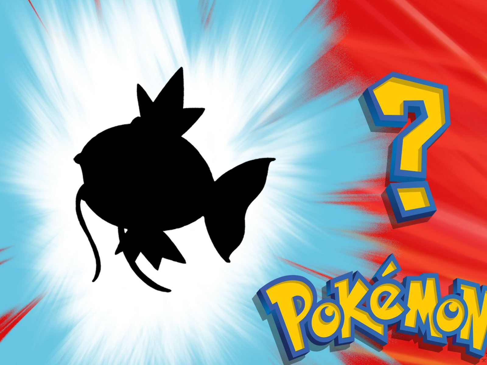

Magikarp es uno de los Pokemon más reconocidos y a su vez "útiles" en el juego. Hablaremos de este individuo en más detalle en el siguiente enlace, datado en la imagen.
Magikarp fue el 1º en aparecer en "Lección Pokémon" de Oak de la Pokédex.
La evolución de Magikarp a Gyarados es una de las evoluciones más drásticas, debido al notable aumento de poder que experimenta.
Es uno de los pocos Pokémon que aparecen en todas las regiones.
A pesar de que se diga que Magikarp es uno de los Pokémon más débiles de todos, hay ocho de ellos más débiles que él: Caterpie, Weedle, Sunkern, Wurmple, Ralts, Azurill, Kricketot y Wishiwashi en su forma individual.

Los Pokémon son criaturas de todo tipo de formas y tamaños que viven bien en un medio salvaje o junto a los seres humanos. La mayoría de los Pokémon solo hablan para decir sus nombres. En la actualidad, hay más de 700 criaturas que habitan el universo Pokémon.
Los dueños de los Pokémon (denominados “Entrenadores”) los crían y los cuidan. Durante sus aventuras, los Pokémon crecen y adquieren más experiencia, e incluso, en ocasiones, evolucionan para convertirse en Pokémon más fuertes.
Hay más de doce tipos diferentes de Pokémon, como el tipo Fuego, el tipo Psíquico o el tipo Dragón. Cada tipo de Pokémon tiene sus ventajas e inconvenientes a la hora de luchar contra otros Pokémon. Por ejemplo, un Pokémon de tipo Fuego tendrá ventaja sobre un Pokémon de tipo Planta, pero estará en desventaja ante un Pokémon de tipo Agua. Esto hace que la estrategia, el posicionamiento y el uso que hagas de los Pokémon en tu equipo sean de crucial importancia en el desarrollo de los combates.